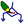
Menú Herramientas: Dibujar Diagrama de Flujo...
Muestra una ventana con el dibujo de un diagrama de flujo que representa el bloque de código más interno en donde se encontraba el cursor. El cursor debe estar dentro de un bloque de código válido (se determinan por las llaves {}). En esta ventana se pueden utilizar la rueda del mouse para agrandar o achicar el dibujo y el botón izquierdo para desplazarlo.
Nota: La implementación actual de esta funcionalidad no se encuentra finalizada, aún no es capaz de dibujar correctamente la estructuras condicional switch.
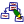
Menú Herramientas: Dibujar Jerarquia de Clases...
Muestra el díalogo de Dibujar Jerarquía de Clases, el cual permite generar una representación gráfica de la jerarquía de clases de uno o más fuentes.
Temas relacionados: Diálogo Dibujar Jerarquía de Clases
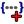
Menú Herramientas: Implementar métodos/funciones faltantes...
Cuando un proyecto tiene un par de archivos fuente y cabecera homónimos (por ejemplo clase.h y clase.cpp), este comando busca prototipos de métodos y/o funciones que estén definidos en el archivo de cabecera, pero que no tengan implementación en ninguno de ellos (es decir, solo estén los prototipos). El comando genera automáticamene todas las implementaciones vacías para estos métodos en al final del archivo fuente (copia los prototipos, agregando los scopes de clases si es necesario, y las llaves con una línea en blanco). Esta función no tendrá en cuenta métodos definidos como virtuales puros.
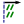
Menú Herramientas: Comentarios: Alinear comentarios
.
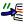
Menú Herramientas: Comentarios: Comentar
.
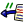
Menú Herramientas: Comentarios: Descomentar
.
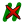
Menú Herramientas: Comentarios: Eliminar comentarios
.
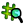
Menú Herramientas: Preprocesador: Expandir macros
.
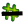
Menú Herramientas: Preprocesador: Marcar lineas no compiladas
.
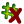
Menú Herramientas: Preprocesador: Borrar marcas
.
Menú Herramientas: Generar Makefile...
Permite generar automáticamente un archivo Makefile a partir de la composición y configuración de un proyecto. Un archivo Makefile es un archivo que contiene las reglas y comandos necesarios para construir el programa y es utilizado por la herramienta GNU make para tal fin. Dicho archivo incluye además información sobre las relaciones entre los archivos y los objetos (qué obejto depende de qué archivo fuente y cuales cabeceras), lo que permite recompilar lo mínimo necesario cuando se modifica el código. Vea Dialogo Generar Makefile.
Menú Herramientas: Abrir consola...
.
Menú Herramientas: Propiedades del ejecutable...
.
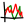
Menú Herramientas: Estadisticas del proyecto...
.
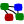
Menú Herramientas: Grafo del proyecto...
Genera y mustra el Grafo de proyecto, un grafo que muestra información sobre los tamaños y las relaciones de inclusión entre los archivos fuente y cabecera de un proyecto.
Menú Herramientas: Compartir Archivos en la Red Local: Abrir compartido...
Permite abrir un archivo que se está editando en otra PC (tambien utilizando ZinjaI). Muestra el diálogo Abrir Compartido, en el cual, conociendo el IP o HostName de la otra PC, podemos seleccionar y transferir un fuente. El fuente recibido se abre como un nuevo archivo sin título. Esta opción, junto con Compartir, permiten intercambiar fuentes rápidamente a travez de una LAN.
Menú Herramientas: Compartir Archivos en la Red Local: Compartir...
Muestra el cuadro de diálogo Compartir Fuente, , el cual permite compartir el archivo actual a travez de una LAN (red interna). Un archivo compartido es un archivo disponible para ser descargado desde otras PCs. Hay dos formas en las cuales se comparte un archivo: puede compartirse sin modificaciones, es decir, que el archivo se descargará en las otras PCs exáctamente como estaba al momento de comenzar a compartirlo; o puede compartirse con modificaciones, es decir que siempre se descargará la versión actualizada del mismo. Para ser descargado en otra PC, sólo necesitará conocer el nombre de la PC que comparte el archivo (el cual se muestra en el diálogo Compartir Fuente. Cada archivo compartido se identifica por un nombre ficticio que se especifica en dicho diálogo y puede o no coincidir con el nombre real del mismo.
Menú Herramientas: Compartir Archivos en la Red Local: Ver lista de compartidos propios...
Muestra la lista de archivos que ZinjaI está compartiendo actualmente. El cuadro de diálogo que muestra la lista permite además seleccionar archivos para dejar de compartirlos.
Menú Herramientas: Comparar Archivos: Dos fuentes abiertos...
.
Menú Herramientas: Comparar Archivos: Fuente actual contra archivo en disco...
.
Menú Herramientas: Comparar Archivos: Cambios en fuente actual contra su version en disco...
.
Menú Herramientas: Comparar Archivos: Ir a diferencia anterior
.
Menú Herramientas: Comparar Archivos: Ir a diferencia siguiente
.
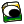
Menú Herramientas: Comparar Archivos: Mostrar cambio
.
Menú Herramientas: Comparar Archivos: Aplicar cambio
.
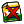
Menú Herramientas: Comparar Archivos: Descartar cambio
.
Menú Herramientas: Comparar Archivos: Borrar marcas
.
Menú Herramientas: Generar Documentacion: Configurar...
.
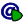
Menú Herramientas: Generar Documentacion: Generar...
.
Menú Herramientas: Generar Documentacion: Ver...
.
Menú Herramientas: Diseñar interfases: Configurar Integracion con wxFormBuilder...
.
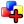
Menú Herramientas: Diseñar interfases: Adjuntar un Nuevo Proyecto wxFB...
.
Menú Herramientas: Diseñar interfases: Adjuntar un Proyecto wxFB Existente...
.
Menú Herramientas: Diseñar interfases: Regenerar Proyectos wxFB
.
Menú Herramientas: Diseñar interfases: Generar Clase Heredada...
.
Menú Herramientas: Diseñar interfases: Actualizar Clase Heredada...
.
Menú Herramientas: Diseñar interfases: Referencia wxWidgets...
.
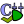
Menú Herramientas: Análisis estático: Iniciar...
.
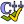
Menú Herramientas: Análisis estático: Configurar...
.
Menú Herramientas: Análisis estático: Mostrar Panel de Resultados
.
Menú Herramientas: Perfil de ejecución: Habilitar/Deshabilitar
.
Menú Herramientas: Perfil de ejecución: Algoritmo de Dibujo
.
Menú Herramientas: Perfil de ejecución: Visualizar Resultados (grafo)...
.
Menú Herramientas: Perfil de ejecución: Listar Resultados (texto)
.
Menú Herramientas: Test de cobertura: Habilitar/Deshabilitar
.
Menú Herramientas: Test de cobertura: Mostrar barra de resultados
.
Menú Herramientas: Test de cobertura: Eliminar resultados
.
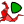
Menú Herramientas: Análisis dinámico: Ejecutar...
.
Menú Herramientas: Análisis dinámico: Mostrar panel de resultados
Despliega un panel en la parte inferior de la ventana principal donde se muestran los resultados de la última ejecución realizada a través de valgrind. Más información sobre .
Menú Herramientas: Herramientas personalizables: Configurar (generales)...
Muestra una cuadro de diálogo para configurar herramientas personalizables generales, que ZinjaI mostrará en todo momento. Las herramientas personalizables son items del menú, o botones en la barra de herramientas para ejecutar comandos arbitrarios. Se pueden utilizar por ejemplo para invocar fácilmente programas externos a ZinjaI.
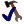
Menú Herramientas: Herramientas personalizables: Configurar (de proyecto)...
Muestra una cuadro de diálogo para configurar herramientas personalizables que se guardarán con el archivo de proyecto, y que ZinjaI mostrará solo para ese proyecto. Las herramientas personalizables son items del menú, o botones en la barra de herramientas para ejecutar comandos arbitrarios. Se pueden utilizar por ejemplo para invocar fácilmente programas externos a ZinjaI.
Menú Herramientas: Guardar como nueva plantilla...
.
Menú Herramientas: Instalar complemento...
Abre un cuadro de diálogo que permite instalar complementos para ZinjaI. Los complementos pueden contener documentación, plantillas, ínidices de autocompletado, binarios de bibliotecas, ejemplos, etc. La ventana de instalación ofrese un botón para acceder a la sección de descargas de complementos del sitio oficial de ZinjaI..